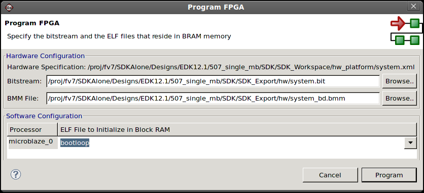

JTAG settings
Embedded hardware components
In the Program FPGA dialog box, you can program the FPGA with the bitstream.

The Program FPGA dialog box contains the following items:
| Name | Function |
|---|---|
| Hardware Configuration | Specify the Bitstream and BMM files. These are provided by XPS when you export your hardware design to SDK. |
|
In this field, specify the FPGA Bitstream. |
|
In this field, specify the BMM file. |
| Software Configuration | Specify the program that is initialized at the reset start address for each processor in the Block RAM. |
|
Name of the Processor in the System. |
|
Specify the ELF file to initialize. |
| Program | Click this button to program the FPGA. |

JTAG settings
Embedded hardware components

Configuring the JTAG settings
Programming the FPGA
Copyright © 1995-2013 Xilinx, Inc. All rights reserved.